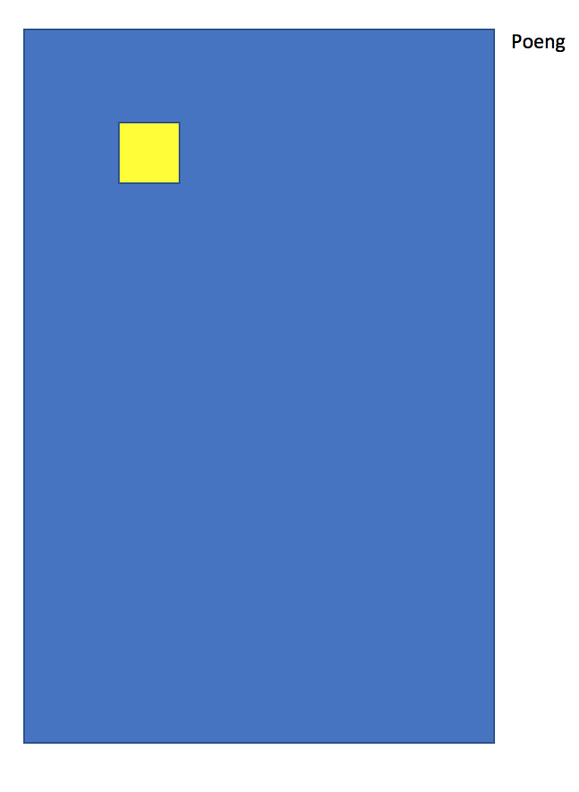

Tetris
Planlegging
Kravspesifikasjon
Overordnet beskrivelse
vi skal lage et spill - Tetris.I tetris skal tetrominoer falle ned fra himmelen og stables. Dersom en linje (som er 10 ruter bred) er helt full - da skal den slettes og alle brikker (hver tetromino består av fire brikker) som er over skal falle ned en linje.
For hver linje får du ett poeng, men dersom du fyller flere med en brikke så får du 2, 4, 8 or de andre linjene.
Kravliste
- Vi skal ha tertrominoene SDGISJ
- Hver tetromino skal ha sin distinkte farge
- Poengviser oppe til høyre
- Forhåndsvisning av neste brikke
- Spillet er over når neste brikke ikke får plass
- Hastigheten øker for hver tiende linje
Design og utforming
Beskrivelse
Tetris skal vises som et brett på 10 ruter i bredden og 20 i høyden.
- Firkanten skal være gul.
- Linja lyseblå
- S skal være grønn
- Z skal være rød
- L skal være oransje
- J skal være blå
- T skal være lilla
wireframe
Systemspesifikasjon
Pseudokode
generer alle tetrominoene (IOSZJLT)
lag brett(10x20)
velg en start brikke(en av IOSZJLT)
plasser brikken på brettet
start spill-motoren(setInterval)
legg inn eventlistener på taster
(trengs av brukerkommandoer)
SPILLMOTOR
utfør brukerkommandoer
flytt brikken ned
sjekk kollisjon
Flytdiagram
@startuml
title Kurs på museum
start
while (brett ikke fylt?) is (Nei)
:Lag ny brikke;
:Aktiver brikke;
:Styr brikke;
:Beregn poeng;
endwhile (Ja)
:Vis poeng;
stop
@enduml

Usecase
Testing
Testspesifikasjon
Test av krav
- Vi skal ha tertrominoene SDGISJ
Lager tester som sjekker at koden får laget de forskjellige tetrominoene på riktig måte: under er et eksempel på tester, men de er ikke implementert(tidsnød)
let tetroT = new Tetromino("*,***"); assert(tetroT.cells[0][0][0] === 0); - Hver tetromino skal ha sin distinkte farge
assert(tetroT.color = "blue"); - Poengviser oppe til høyre
visuell inspeksjon av skjema - stemmer
- Forhåndsvisning av neste brikke
ditto
- Spillet er over når neste brikke ikke får plass
må testes av spiller
- Hastigheten øker for hver tiende linje
- testes av beta-player
Tester brukervennighet -
Test av grenser
- Test at brikkene er sperret inne i brettet - skal ikke kunne flytte forbi høyre og venstre kant
- Test at rotasjon er logisk - pil opp roterer 90 med viser
- Test at vi får poeng for å fjerne linjer
- Test at spillet stopper når brettet er fullt